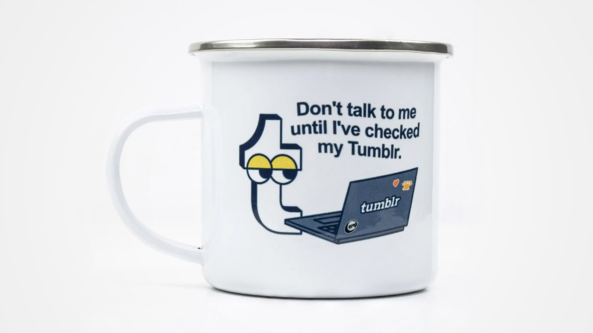
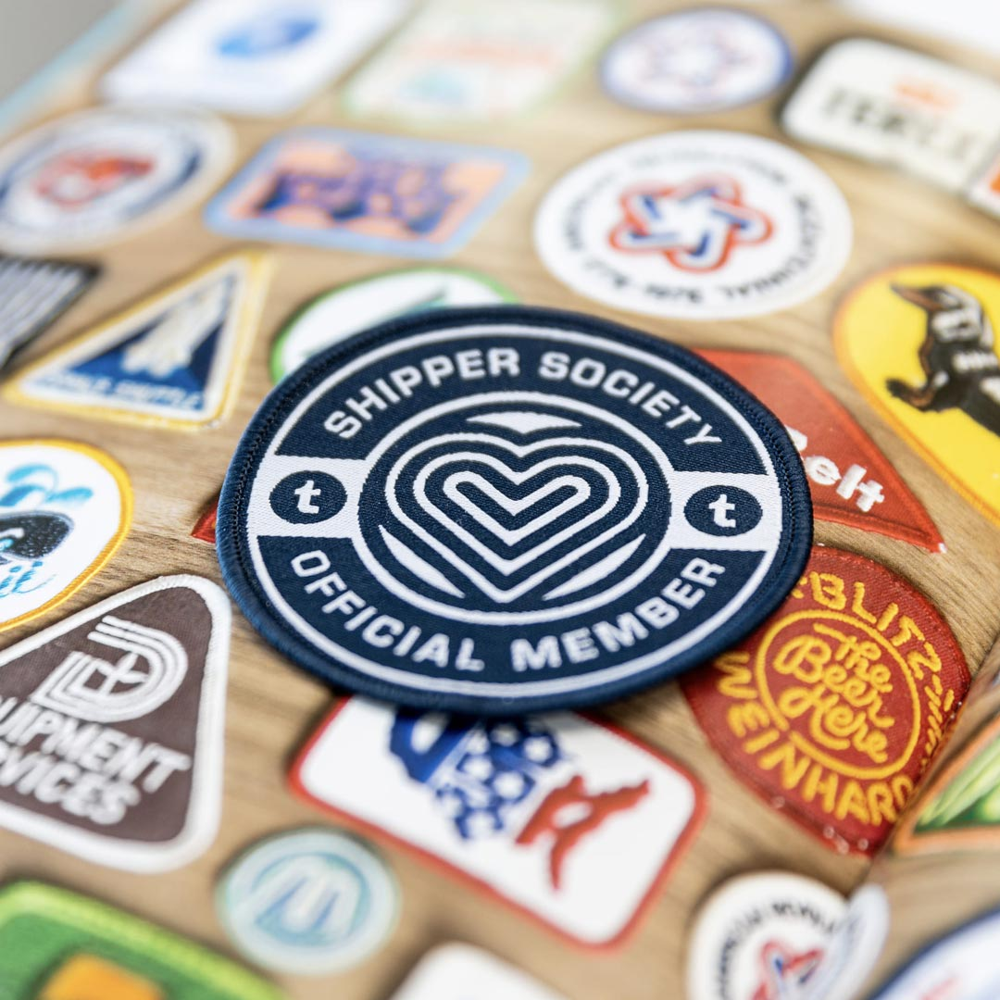
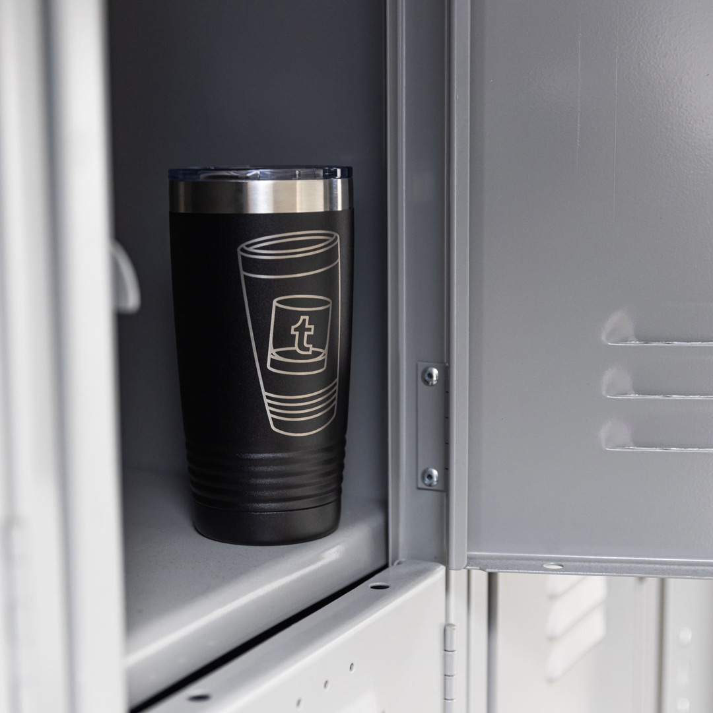
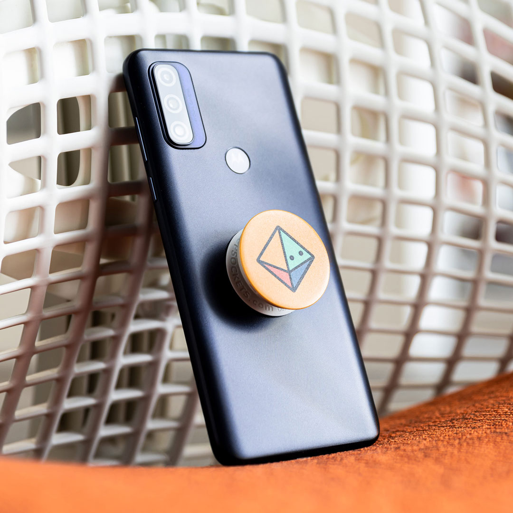
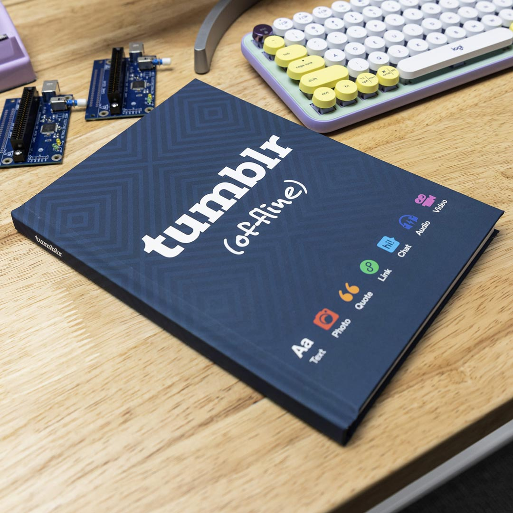

← Return to Homepage — Tumblr Merch

Tumblr — Merch Design
I designed a few pieces of official Tumblr merch! As someone who has used Tumblr for more than a decade, this has been a surreal and exciting project to work on.
In collaboration with my buddy Nick, we created a "Shipper Society" patch, a Tumblr tumbler (genius), a set of PopGrips based on the classic default avatars, and a hardcover journal.
More to come, hopefully!




Go Shopping
Project Details
Designed: Late 2022
Released: January 2023
Credits & Thanks
Photos taken by Tumblr staff.
Thanks to Nick ↗ for the gig!